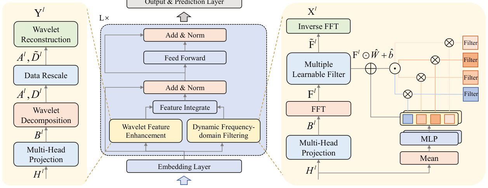

Wavelet Enhanced Adaptive Frequency Filter for Sequential Recommendation (小波增强自适应频率滤波的序列推荐)
- 会议/期刊: AAAI 2026
- 作者与机构: Huayang Xu, Huanhuan Yuan, Guanfeng Liu, Junhua Fang, Lei Zhao, Pengpeng Zhao（苏州大学计算机学院；麦考瑞大学）
- 推荐链路定位: 召回（Next-Item 序列编码器）
- 研究方向: 序列与会话推荐 / 频域信号处理
- 论文原文: https://arxiv.org/abs/2511.07028v2
- 开源代码: https://github.com/xhy963319431/WEARec
TL;DR (1分钟核心速览)
现有频域序列推荐（FMLPRec/SLIME4Rec/BSARec）存在两大硬伤：滤波器对所有用户静态共享，且全局 DFT 本质是低通、会抹平非平稳短期波动。WEARec 用「上下文 MLP 生成缩放/偏置来调制滤波器权重」实现个性化频域滤波，再用 Haar 小波分解只对高频细节系数做可学习增强后重构，两路特征按 \(\alpha\)融合。在 Beauty/Sports/LastFM/ML-1M 四个数据集上采用 Leave-One-Out + Full-Ranking 协议，HR@20 相对最优基线提升 1.31%–11.40%，且\(N=200\) 长序列下每 epoch 训练时间显著低于 BSARec 与 SLIME4Rec。
Background & Motivation (背景与核心矛盾)
- 主流范式: 以 FMLPRec 为代表用可学习频域滤波器替代自注意力，SLIME4Rec/FEARec 引入分层频带与对比学习，BSARec 把频域重调作为自注意力的归纳偏置。
- 前人局限一（静态滤波）: 所有用户共享同一组固定频响的滤波器，被数据集中主导用户群体带偏，无法刻画个体差异；作者用 FMLPRec 替换为固定带通滤波器的探针实验（图 1）证明不同用户被不同频率分量唯一驱动，个性化滤波是刚需。
- 前人局限二（低通偏置）: DFT 是全局变换，FMLPRec 已被证明实质等价于低通滤波器，SLIME4Rec 的分层结构仍倾向学习低频，导致非平稳信号与短期兴趣波动被模糊。
- 核心洞察 (Key Insight): 全局周期结构适合用 DFT 建模，而局部瞬态/非平稳突变适合用时频局部化的小波建模——二者是互补而非替代关系。
- 本文切入点: 用「动态调制 DFT 滤波器」管全局个性化，用「小波高频增强」补局部细节，双路融合。
Method (核心方法设计)
1. 整体框架 (Overall Architecture)
输入为用户定长序列 \(s_u\)的物品嵌入加位置嵌入，经 LayerNorm/Dropout 得\(E^u\in\mathbb{R}^{N\times d}\)。每层沿嵌入维切分为\(k\)个子空间（多头投影），子空间并行送入两条支路：DFF 支路做 FFT→个性化滤波→IFFT 得全局特征\(X^l\)；WFE 支路做 Haar 小波分解→高频系数增强→小波重构得局部特征\(Y^l\)。两路按\(\hat{H}^l=\alpha\odot X^l+(1-\alpha)\odot Y^l\)融合，接残差、LayerNorm 与 FFN，堆叠\(L\) 层后与物品嵌入内积 softmax 输出全库打分。
flowchart TD
A["物品嵌入+位置嵌入 E^u"] --> B["多头投影切分 k 个子空间"]
B --> C["DFF: FFT → 上下文MLP调制滤波器 → IFFT"]
B --> D["WFE: Haar小波分解 → 高频系数增强 → 小波重构"]
C --> E["α 加权融合 + 残差/FFN"]
D --> E
E --> F["与物品嵌入内积 softmax 全库打分"]
2. 关键设计拆解 (Key Designs)
-
动态频域滤波 DFF（上下文条件化的滤波器调制）：痛点是静态滤波器无法因人而异。做法是对时域特征沿物品维取均值得上下文 \(c^l=\frac{1}{N}\sum_{i=1}^{N}H^l_i\)，用两个三层 MLP 生成缩放因子与偏置，再线性调制基础滤波器： \(\hat{W}^l=W^l\odot(1+\Delta s^l),\quad \hat{b}^l=b^l+\Delta b^l,\quad \tilde{F}^l_i=F^l_i\odot\hat{W}^l+\hat{b}^l\)直觉上\(\Delta s^l\)重塑整体频响包络、\(\Delta b^l\) 微调特定频带权重，使同一套参数能对不同用户"变形"出不同滤波器，且调制是乘性轻量操作，不引入注意力开销。
-
小波特征增强 WFE（只增强高频细节系数）：痛点是 DFT 抹平非平稳突变。对子空间做 Haar 小波分解得近似系数 \(A^l_i\)与细节系数\(D^l_i\)，仅对高频细节乘可学习增强矩阵\(T^l\)：\(\tilde{D}^l_i=D^l_i\odot T^l\)，再与未改动的\(A^l_i\)一起小波重构\(Y^l_i=\mathcal{W}^{-1}(A^l_i,\tilde{D}^l_i)\)。保留低频原貌避免破坏主趋势，只让模型自适应放大/抑制瞬态点（附录可视化显示\(T\) 对非平稳点赋高权、对噪声点赋负权）。
-
训练目标、负采样与推理效率：损失为标准全库 softmax 交叉熵 \(\mathcal{L}_{Rec}=-\sum_{i=1}^{|\mathcal{V}|}y_i\log\hat{y}_i\)，不使用负采样、不使用对比学习。复杂度上自注意力为\(O(n^2d+nd^2)\)，而 FFT+Haar 使特征混合层降至\(O(nd\log n+nd)\)，加两个 MLP 的\(O(2nd^2)\)与 FFN 的\(O(nd^2)\)，总体\(O(nd\log n+3nd^2)\)，对大\(n\)由\(O(nd\log n)\)主导，长序列下优于\(O(n^2)\) 的 BSARec。
Experimental Setup & Evaluation Protocol (实验设置与评估协议)
- 数据集与预处理: 四个公开数据集均采用
5-core过滤（剔除交互少于 5 的用户）：
| 数据集 | #Users | #Items | #Interactions | 稀疏度 | 特征/场景说明 |
|---|---|---|---|---|---|
| Beauty | 22,363 | 12,101 | 198,502 | 99.93% | Amazon 美妆，短序列（均长 8.9） |
| Sports | 25,598 | 18,357 | 296,337 | 99.95% | Amazon 运动户外，短序列（均长 8.3） |
| LastFM | 1,090 | 3,646 | 52,551 | 98.68% | 音乐艺人收听，长序列（均长 48.2） |
| ML-1M | 6,041 | 3,417 | 999,611 | 95.16% | 电影评分，长序列（均长 165.5） |
- 数据划分与防穿越:
Leave-One-Out（每用户最后一项为测试、倒数第二项为验证，其余训练）。 - 排名评测协议: 无偏
Full-Ranking（对全物品集排序，不做负采样），指标 HR@{10,20} 与 NDCG@{10,20}。 - 对比基线与超参设置: 时域基线 GRU4Rec/Caser/SASRec/DuoRec，频域基线 FMLPRec/FamouSRec/FEARec/SLIME4Rec/BSARec；嵌入维度 \(d=64\)、层数\(L=2\)、默认\(N=50\)、batch 256、Adam（lr∈{5e-4,1e-3}）、小波分解 1 层、\(\alpha\in[0.1,0.9]\)、\(k\in\{1,2,4,8\}\)；各模型取最优超参报告。
Key Experimental Results (实验关键数据)
1. 主实验对比 (Main Results)
| 数据集 | 指标 | SASRec | DuoRec | FMLPRec | FEARec | SLIME4Rec | BSARec | WEARec | Improv. |
|---|---|---|---|---|---|---|---|---|---|
| Beauty | HR@20 | 0.0823 | 0.1313 | 0.0869 | 0.1352 | 0.1381 | 0.1373 | 0.1391 | 1.31% |
| Beauty | NG@20 | 0.0356 | 0.0671 | 0.0369 | 0.0694 | 0.0696 | 0.0703 | 0.0703 | 0.00% |
| Sports | HR@20 | 0.0459 | 0.0791 | 0.0525 | 0.0836 | 0.0869 | 0.0858 | 0.0895 | 2.99% |
| Sports | NG@20 | 0.0200 | 0.0387 | 0.0231 | 0.0405 | 0.0421 | 0.0422 | 0.0433 | 2.60% |
| LastFM | HR@20 | 0.0927 | 0.0963 | 0.0826 | 0.0826 | 0.0927 | 0.1174 | 0.1202 | 2.38% |
| LastFM | NG@20 | 0.0429 | 0.0446 | 0.0372 | 0.0414 | 0.0433 | 0.0526 | 0.0543 | 3.23% |
| ML-1M | HR@20 | 0.3245 | 0.3738 | 0.3137 | 0.3714 | 0.3950 | 0.3884 | 0.4031 | 2.05% |
| ML-1M | NG@20 | 0.1395 | 0.1790 | 0.1356 | 0.1771 | 0.1939 | 0.1851 | 0.1968 | 1.49% |
长序列效率对比（\(N=200\)，ML-1M / LastFM 每 epoch 秒数）：WEARec 66.46 / 5.23，BSARec 109.26 / 10.84，SLIME4Rec 120.43 / 13.77，FMLPRec 36.93 / 4.91——WEARec 参数略多但训练时间约为 BSARec 的 60%、SLIME4Rec 的 55%。
2. 消融实验 (Ablation Study)
| 变体 | Beauty HR@20 | Sports HR@20 | LastFM HR@20 | ML-1M HR@20 | 说明 |
|---|---|---|---|---|---|
| w/o W（去 WFE） | 下降 | 下降 | 下降 | 下降 | 失去高频/非平稳增强 |
| w/o F（去 DFF） | 下降 | 下降 | 下降 | 下降 | 退化为静态滤波 |
| w/o M（去多头投影） | 下降 | 下降 | 下降 | 下降 | 子空间多样性丧失 |
| WEARec | 最优 | 最优 | 最优 | 最优 | 四数据集全胜 |
（原文图 4 以柱状图给出具体数值，四个数据集上完整模型均高于三个变体，NG@20 趋势一致。）
3. 关键实验发现 (Key Findings)
- 个性化滤波是主要增益来源：LastFM 上 HR@10 相对 BSARec 提升 11.40%（0.0807→0.0899），远超 Beauty 的 3.27%，说明序列越长、用户行为越分散时，静态滤波的"主导用户偏置"危害越大，动态调制收益越显著。
- 长序列场景优势扩大且不牺牲效率：\(N\) 从 50 增至 200 时 WEARec 在 ML-1M 上 HR@20 由 0.4031 升至 0.4421、LastFM 由 0.1202 升至 0.1477，而 SLIME4Rec 在 LastFM 上反而从 0.0936 跌至 0.1064 附近波动收敛，体现基线在长序列下易过拟合。
- 频响可视化佐证设计动机：图 6 显示 FMLPRec 与 SLIME4Rec 学到的频响集中在低频段，而 WEARec 覆盖全频段；图 8 的 case study 中 WEARec 在低频与部分高频区间正确捕获的用户数均最多，验证"全局 DFT + 局部小波"互补假设。
Highlights & Limitations (亮点、对比与审稿批判)
- 与代表作对比 (vs. Prior Work): 相比 FMLPRec 的单一静态可学习滤波器，WEARec 引入上下文条件化调制，把"一套滤波器"变成"每用户一套"；相比 SLIME4Rec 靠分层频带+对比学习强行平衡高低频，WEARec 用 Haar 小波在时频局部化层面直接补高频，且完全不用对比学习，训练开销更低；相比 BSARec 把频域当自注意力归纳偏置（仍保留 \(O(n^2)\)注意力），WEARec 是彻底 attention-free 的\(O(n\log n)\) 架构。
- 可迁移亮点: (i) "均值上下文 → 双 MLP → 乘性缩放+加性偏置"的轻量滤波器调制范式，可直接移植到任何频域/卷积核需要个性化的场景；(ii) 小波分解后只改高频细节系数、冻结低频近似系数的保守增强策略，是避免破坏主趋势的通用技巧。
- 审稿级局限批判: (i) 主实验提升幅度偏小（Beauty NG@20 提升 0.00%、ML-1M NG@10 仅 1.37%），且未报告多次运行的方差与显著性检验，增益是否稳定存疑；(ii) 参数量反而高于所有基线（ML-1M 426K vs BSARec 332K），"效率优势"仅体现在训练时间而非显存/推理 FLOPs，且 Haar 小波仅 1 层分解，对更长周期结构的表达能力未充分验证。
Rating (四维评分)
- 方法创新性 (Novelty): ⭐⭐⭐⭐ （动态调制 DFT 滤波器 + 小波高频增强的双域互补思路清晰，但两个模块各自均为已有技术的组合式创新，缺乏理论层面的收敛或谱分析支撑）
- 评估协议与实验扎实度 (Protocol & Experiments): ⭐⭐⭐⭐ （四数据集 + Full-Ranking 无偏协议 + 9 个强基线 + 长序列与效率分析齐全，但缺显著性检验与方差报告，消融仅以柱状图呈现未给数值表）
- 写作与数学规范度 (Clarity & Rigor): ⭐⭐⭐⭐ （DFT/DWT 预备知识与复杂度推导完整，公式符号统一；但 DFF 中 \(k\)与子空间索引、\(M=\lceil N/2\rceil+1\) 的维度对齐说明略简，部分符号上下标混用）
- 工业落地与复现价值 (Industrial & Practical Value): ⭐⭐⭐⭐ （代码已开源，attention-free + 无对比学习使长序列训练成本低，适合长行为序列召回；但参数量增加与频域变换的工程实现细节对线上部署仍有适配成本）